Соединенные Штаты Америки

M2A4 Light Tank
США
Легкий танк 1930-х годов с 37-мм пушкой, использовался на ранних этапах Второй мировой войны.
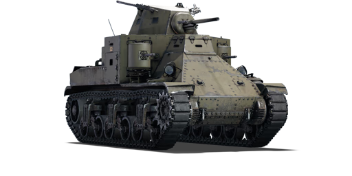
Medium Tank M2
США
Средний танк конца 1930-х годов с многопулемётным вооружением, ставший переходной моделью перед созданием более совершенного M3 Lee. Имел слабую броню и устаревшую конструкцию, из-за чего быстро был снят с производства.
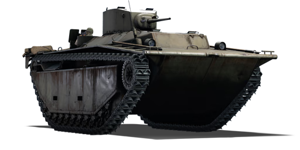
M2A4 Light Tank
США
Плавающий бронетранспортёр (амфибия) на базе LVT-2, вооружённый башней от лёгкого танка M5 Stuart. Использовался морской пехотой США для высадки на Тихоокеанском ТВД. Броня защищала только от лёгкого стрелкового оружия.
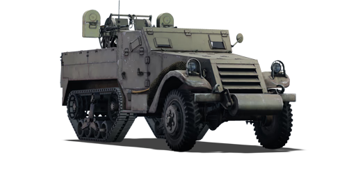
M13 MGMC
США
ЗСУ на шасси полугусеничного бронетранспортёра M3. Применялась для прикрытия войск от низколетящих самолётов. Позднее заменена на M16 MGMC с четырьмя пулемётами.
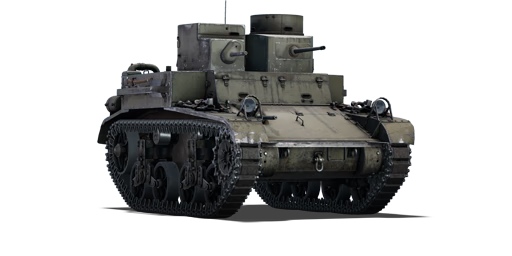
M2A2 Light Tank
США
Двухбашенный лёгкий танк 1930-х годов, прозванный «Mae West» из-за формы башен. Устарел к началу Второй мировой, но использовался в учебных целях.
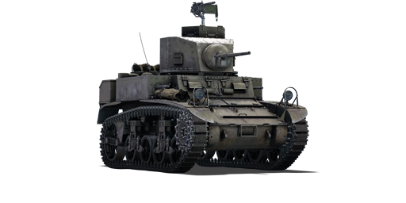
M3 Stuart
США
Один из основных лёгких танков США в начале войны. Отличался высокой скоростью и надёжностью. Поставлялся по ленд-лизу в СССР и Великобританию, где получил прозвище «Stuart». К 1943 году уступил место более мощным машинам.
СССР
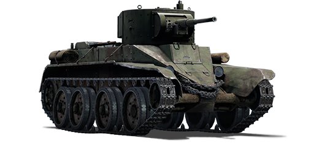
БТ-5
СССР
Улучшенная версия БТ-2 с новой 45-мм пушкой. Участвовал в боях у озера Хасан, на Халхин-Голе и в начале Великой Отечественной войны. Мог двигаться на колёсах (по дорогам) и гусеницах (по бездорожью).
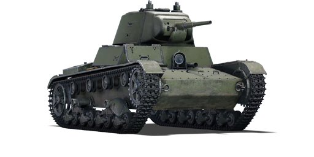
Т-26
СССР
Самый массовый танк РККА 1930-х годов. Участвовал в гражданской войне в Испании, советско-финской войне и начальном периоде ВОВ. Низкая подвижность и слабое бронирование делали его уязвимым к новым немецким танкам.
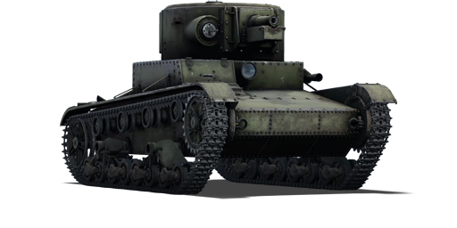
M2A4 Light Tank
СССР
Экспериментальная модификация Т-26 с гаубичным вооружением для поддержки пехоты. Из-за ненадёжности орудия и перегруженности шасси серийно почти не выпускался.
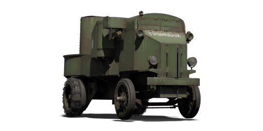
Гарфордъ-Путилов
СССР
Тяжёлый броневик на шасси американского грузовика Garford. Использовался в Первой мировой и Гражданской войнах. Мощное вооружение, но низкая подвижность и перегруженное шасси.
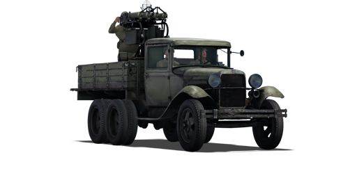
ГАЗ-ААА (4М)
СССР
Разведывательный броневик на базе грузовика ГАЗ-ААА. Участвовал в начале ВОВ, но слабое бронирование и вооружение ограничивали его применение.
БТ-7
СССР
Последняя серийная модификация линейки БТ. Участвовал в боях на Халхин-Голе, в Польше (1939), советско-финской войне и начале ВОВ. Высокая скорость, но слабая броня. Некоторые машины оснащались дизельным двигателем (БТ-7М).
Великобритания
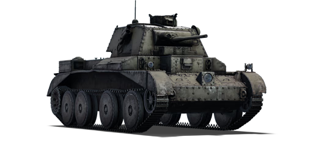
A13 Mk.I
Великобритания
Первый британский крейсерский танк с подвеской Кристи, отличавшийся высокой подвижностью. Участвовал в боях во Франции (1940) и Северной Африке. Тонкая броня делала его уязвимым, но скорость позволяла эффективно маневрировать.
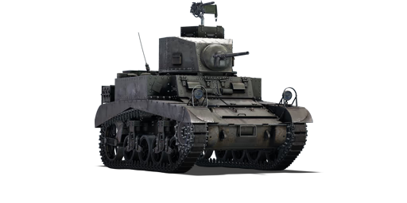
Stuart I
Великобритания
Британское обозначение американского M3 Stuart. Применялся в Северной Африке, где за надёжность и скорость получил прозвище "Honey" ("Медок"). Позже заменён более мощными танками.
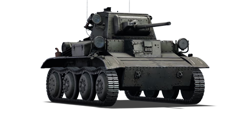
Tetrarch I
Великобритания
Лёгкий разведывательный танк, разработанный для воздушной транспортировки (включая десантирование на планерах). Участвовал в операциях на Мадагаскаре (1942) и в Нормандии (1944). Слабая броня, но полезен для воздушно-десантных операций.
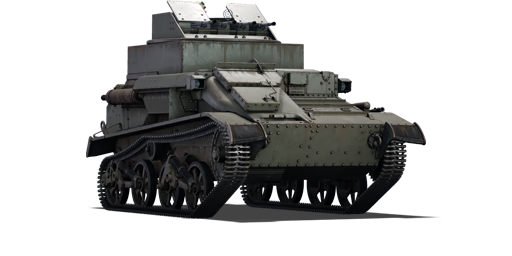
Light AA Mk I
Великобритания
Ранняя британская ЗСУ на шасси лёгкого танка Mk VI. Из-за слабой огневой мощи была неэффективна против самолётов и в основном использовалась для обучения.
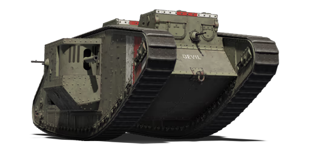
Mark V
Великобритания
Танк позднего периода Первой мировой войны с улучшенной подвижностью. Использовался в ограниченных количествах в Гражданской войне в России и колониальных конфликтах. К Второй мировой войне устарел.
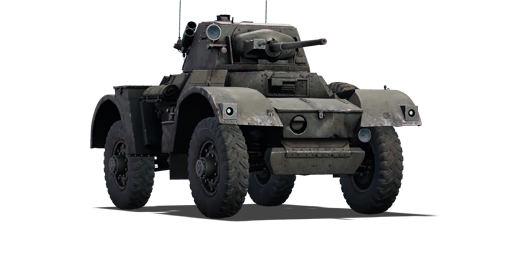
Daimler Mk II
Великобритания
Высокомобильная разведывательная машина с полным приводом и низким профилем. Применялась в Северной Африке, Италии и Северо-Западной Европе. Ценилась за надёжность и огневую мощь.
Япония
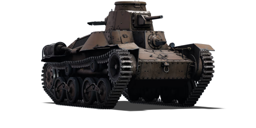
Type 95 "Ha-Go"
Япония
Основной лёгкий танк японской императорской армии. Активно применялся в Китае, Бирме и на Тихоокеанском ТВД. Имел слабую броню, но отличался хорошей маневренностью в условиях джунглей. К 1942 году устарел против американских танков.
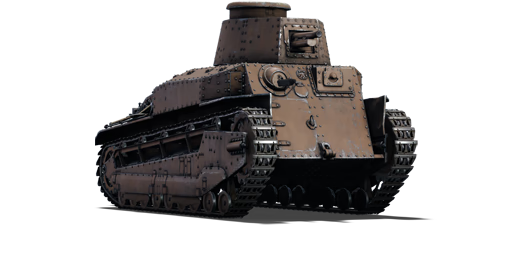
Type 89 "I-Go Ko"
Япония
Первый японский серийный средний танк. Модификация "Ko" имела улучшенную подвеску и двигатель. Применялся в боях в Китае, но к началу войны на Тихом океане считался морально устаревшим. Тонкая броня и низкая скорость ограничивали его боевую ценность.
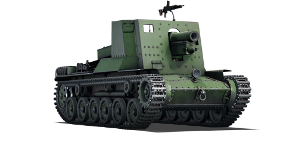
Type 4 "Ho-Ro"
Япония
САУ на шасси среднего танка Type 97 "Chi-Ha". Использовалась для огневой поддержки на Филиппинах и Окинаве. Имела мощное орудие, но слабую бронезащиту и низкую мобильность. Выпущено всего около 12 единиц.
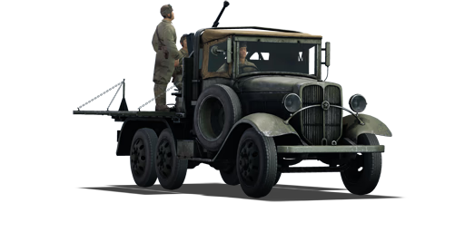
Type 94
Япония
Сверхлёгкая бронемашина для разведки и поддержки пехоты. Широко применялась в Китае. Имела крайне слабую защиту - броня пробивалась даже крупнокалиберными пулемётами. Часто использовалась как тягач.
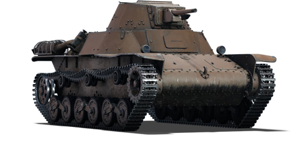
Type 98 "Ke-Ni"
Япония
Попытка модернизации "Ha-Go" с новой подвеской и усиленной бронёй. Выпущено около 100 единиц. Недостаточное вооружение и бронирование не позволяли эффективно бороться с американскими M3/M5 Stuart.
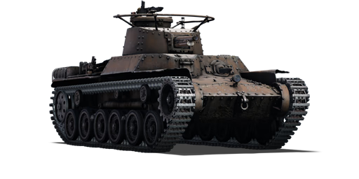
Type 97 "Chi-Ha"
Япония
Основной средний танк Японии во Второй мировой войне. Модернизированная версия с 47-мм пушкой получила обозначение "Shinhoto Chi-Ha". Участвовал в боях по всему Тихоокеанскому региону, но уступал американским M4 Sherman по всем параметрам.
Германия
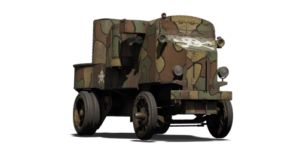
Garford-Beute
Германия
Трофейные русские бронеавтомобили "Гарфорд-Путилов", захваченные немецкими войсками в ходе Первой мировой войны. Использовались преимущественно на Восточном фронте. Главным преимуществом была мощная 76-мм пушка, но низкая подвижность и перегруженность шасси оставались серьёзными недостатками.
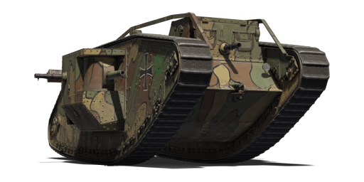
Beutepanzer IV
Германия
Захваченные немецкими войсками советские танки Т-34, использовавшиеся в составе вермахта и войск СС. Некоторые машины подвергались модернизации - устанавливались немецкие радиостанции, командирские башенки. Применялись на всех фронтах, особенно в 1941-1942 годах.
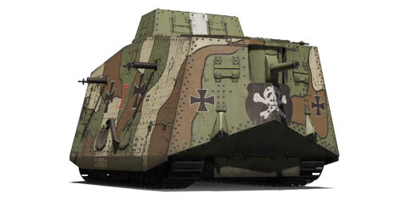
A7V
Германия
Первый и единственный серийный немецкий танк Первой мировой войны. Всего построено 20 машин. Участвовал в нескольких боях весной 1918 года. Характеризовался неудобством управления, плохой проходимостью, но мощным вооружением. После войны все оставшиеся A7V были уничтожены по условиям Версальского договора.
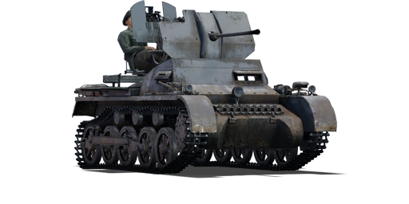
Flakpanzer I
Германия
Импровизированная зенитная самоходка на шасси лёгкого танка Pz.Kpfw. I Ausf. A. Разработана как временная мера для ПВО танковых частей. Всего переоборудовано около 24 машин. Применялась в Северной Африке и на Восточном фронте в 1941-1942 годах.
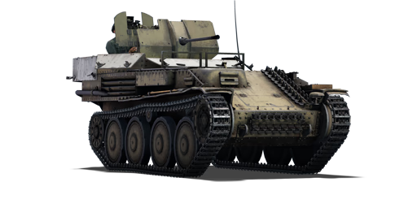
Flakpanzer 38(t)
Германия
Зенитная самоходка на шасси чешского танка Pz.Kpfw. 38(t). Открытая установка орудия делала расчёт уязвимым. Всего выпущено 141 единица. Применялась для прикрытия танковых частей от авиации, но из-за слабой огневой мощи была малоэффективна против современных самолётов.
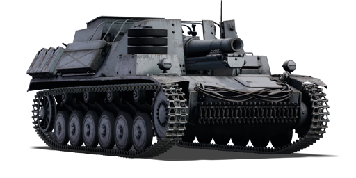
15cm sIG 33 B Sfl.
Германия
Самоходная артиллерийская установка на шасси французского танка Hotchkiss H38. Разработана для мобильной огневой поддержки пехоты. Всего переоборудовано около 24 машин. Применялась во Франции и на Восточном фронте в 1941-1942 годах. Главный недостаток - открытая установка орудия и слабое бронирование.
Китай
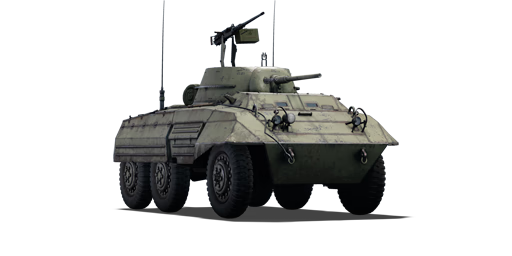
M8 Greyhound (LAC)
Китай
Американские бронеавтомобили M8, поставленные в Китай по ленд-лизу. Использовались гоминьдановскими войсками против японцев, а позже - в гражданской войне против коммунистов. После 1949 года некоторое количество оставалось на Тайване.
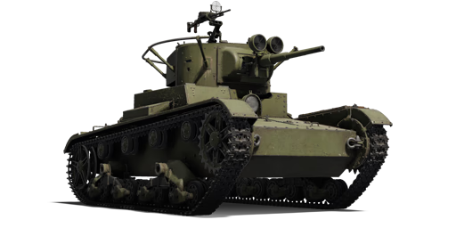
Т-26
Китай
Советские танки Т-26, поставленные Китаю в 1938-1939 гг. (около 82 единиц). Участвовали в войне с Японией. После 1945 года использовались обеими сторонами в гражданской войне. Некоторые дожили до 1950-х в учебных частях.
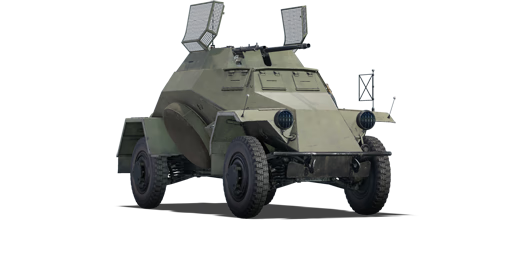
Sd.Kfz.222
Китай
Немецкие бронеавтомобили, захваченные у японцев (которые получили их от Германии). Использовались гоминьдановцами в гражданской войне. Из-за нехватки запчастей быстро вышли из строя.
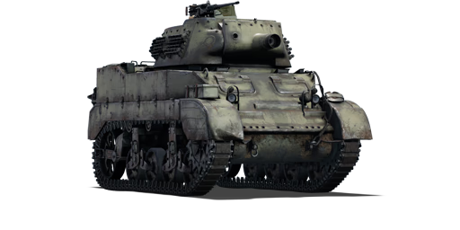
M8 HMC
Китай
Американские самоходки на шасси M5 Stuart, поставленные по ленд-лизу (около 25 единиц). Применялись против японцев. После 1949 года несколько штук использовались НОАК вплоть до 1960-х как учебные.
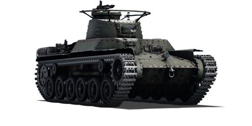
Type 97 "Chi-Ha"
Китай
Японские танки, захваченные как гоминьдановцами, так и коммунистами. Использовались в гражданской войне. НОАК применяла их даже в Корейской войне (1950-1953), где они безнадёжно устарели.
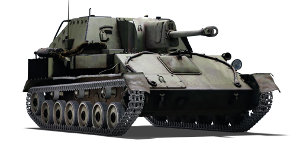
SU-76M
Китай
Советские САУ, переданные КПК в 1946-1949 гг. (около 300 единиц). Стали основой бронетанковых сил НОАК в гражданской войне. Участвовали в Корейской войне. Сняты с вооружения в конце 1950-х.
Италия
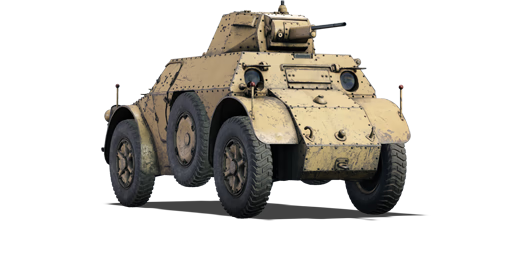
AB 41
Италия
Основной бронеавтомобиль итальянской армии во Второй мировой войне. Отличался хорошей проходимостью благодаря полному приводу и двум постам управления. Использовался в Северной Африке, на Балканах и в Италии. Всего выпущено около 550 единиц.
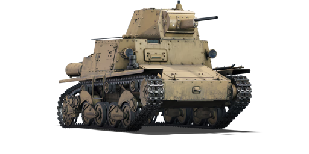
L6/40
Италия
Лёгкий танк для разведки и поддержки пехоты. Применялся в Северной Африке, СССР и Италии. Слабое бронирование и вооружение ограничивали его боевую ценность. Выпущено около 440 единиц. Некоторые машины переоборудовались в САУ Semovente L6 da 47/32.
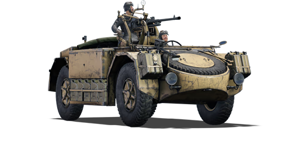
AS 42 "Sahariana"
Италия
Специализированная машина для действий в пустыне на шасси AB 41. Использовалась в Северной Африке для дальних рейдов и разведки. Вооружалась различными орудиями, включая противотанковые пушки. Выпущено около 200 единиц.
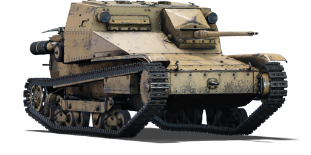
L3/33 CC
Италия
Огнемётная модификация танкетки L3/33. Применялась в Эфиопии и Испании. Огнемёт имел дальность действия до 40 м. Из-за уязвимости и слабого бронирования использовалась ограниченно. Всего переоборудовано около 30 машин.
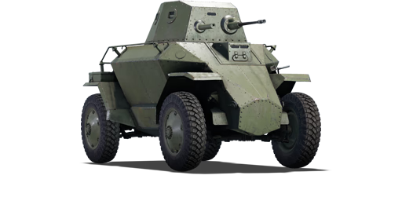
Csaba
Италия
Разведывательный бронеавтомобиль венгерской армии с оригинальной конструкцией (два поста управления). Использовался на Восточном фронте и для внутренней безопасности. Всего выпущено около 170 единиц. Отличался хорошей подвижностью, но слабой бронёй.
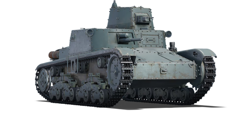
M11/39
Италия
Переходная модель с устаревшей компоновкой (основное орудие в корпусе). Применялся в Северной Африке, где показал полную несостоятельность против британских танков. Всего выпущено около 100 единиц. Быстро заменён на M13/40.
Франция
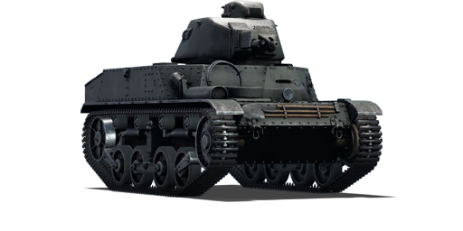
AMC 34 (YR)
Франция
Экспериментальный кавалерийский танк с оригинальной подвеской. Разрабатывался как разведывательная машина, но из-за тесноты и ненадёжности был отвергнут армией. Несколько экземпляров использовались в учебных целях до 1940 года.
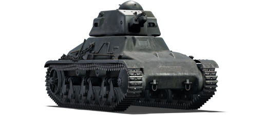
Hotchkiss H.35
Франция
Основной лёгкий танк французской армии с литой бронёй. Участвовал во Французской кампании 1940 года. После капитуляции Франции 550 единиц использовались вермахтом как Pz.Kpfw. 35H(f), часть - в учебных целях до 1944 года.
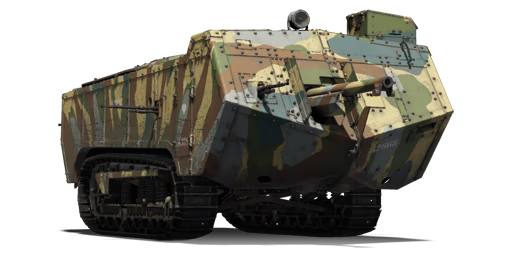
Saint-Chamond
Франция
Уникальный танк Первой мировой с электромеханической трансмиссией и передним расположением орудия. Из-за плохой проходимости применялся ограниченно. Все уцелевшие машины были сняты с вооружения в 1919 году.
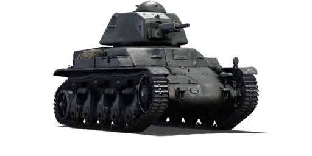
R.35 (SA38)
Франция
Модернизированная версия R.35 с новой пушкой. Составлял основу французских танковых частей в 1940 году. После поражения Франции 840 единиц использовались немцами как Pz.Kpfw. 35R(f), преимущественно для охраны аэродромов.
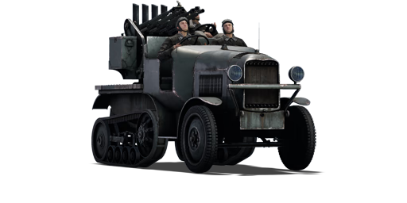
P.7.T AA
Франция
Экспериментальная ЗСУ на шасси бронеавтомобиля Panhard 178. Разрабатывалась для замены устаревших буксируемых зениток. В серию не пошла из-за поражения Франции. Единственный прототип захвачен немцами в 1940 году.
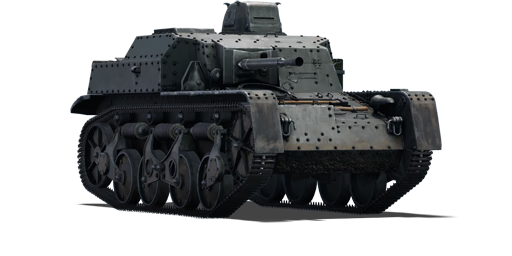
AMR 35 ZT3
Франция
Специализированная противотанковая САУ на базе разведывательного танка AMR 35. Разрабатывалась как мобильное средство борьбы с бронетехникой. Применялась в 1940 году, но из-за слабого орудия оказалась малоэффективной против немецких танков.
Швеция
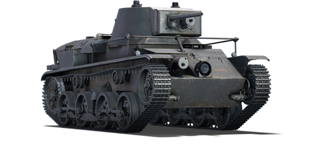
Strv m/31
Швеция
Первый современный шведский танк, созданный на основе немецкого проекта Räder-Raupen Kampfwagen. Имел комбинированное колёсно-гусеничное шасси. Использовался в основном для обучения экипажей. К 1942 году признан устаревшим, но оставался на службе до конца войны.
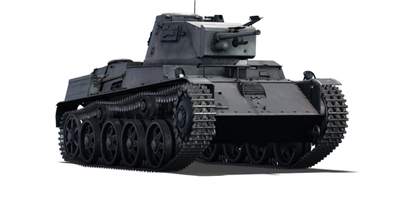
Strv m/38
Швеция
Улучшенная версия Strv m/37 (самого массового шведского танка предвоенного периода). Отличался усиленной подвеской и изменённой башней. Составлял основу шведских танковых сил в начале Второй мировой войны.
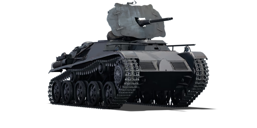
Pvlvv fm/42
Швеция
Первая шведская специализированная ЗСУ на шасси танка Strv m/41. Разработана для защиты войск от низколетящих самолётов. Оставалась на вооружении до 1950-х годов.
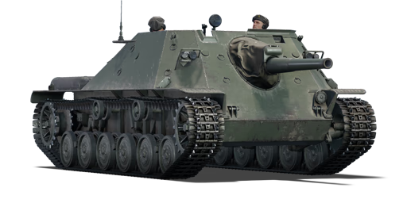
Ikv 72
Швеция
Лёгкая САУ для поддержки пехоты на шасси танка Strv m/41. Открытая рубка обеспечивала хороший обзор, но делала экипаж уязвимым. Активно использовалась в послевоенный период.
Vickers Mk.E
Швеция
Швеция закупила лицензию на британский Vickers Mk.E, но существенно модернизировала его, установив новую башню и шведское вооружение. Эти машины стали первыми современными танками в шведской армии.
BT-42
Швеция
Легкий танк 1930-х годов с 37-мм пушкой, использовался на ранних этапах Второй мировой войны.
Израиль
M-51
Израиль
Модернизированная версия американского M4 Sherman с французской 105-мм пушкой. Разработан специально для борьбы с арабскими Т-54/55. Участвовал в Шестидневной войне (1967) и Войне Судного дня (1973). Отличался мощным орудием, но слабой защитой.
AMX-13
Израиль
Французские лёгкие танки, закупленные Израилем. Модернизированы установкой 105-мм орудия. Использовались как разведывательные машины и в роли лёгких танков поддержки. Применялись во всех арабо-израильских конфликтах до 1973 года.
TCM-20
Израиль
Самодельная ЗСУ на шасси различных бронетранспортёров. Создана путём установки спаренных авиационных пушек. Эффективно использовалась против низколетящих целей в Шестидневной войне и Войне Судного дня.
M109 Doher
Израиль
Американские САУ, значительно модернизированные в Израиле. Получили улучшенную систему управления огнём и дополнительную броню. Составляют основу израильской самоходной артиллерии, участвовали во всех конфликтах с 1973 года.
Magach 1
Израиль
Модернизированная версия американского танка M48 Patton. Основные улучшения: новая пушка, двигатель и система управления огнём. Участвовал в Шестидневной войне, где доказал своё превосходство над арабскими Т-54/55.
AML-90
Израиль
Французские разведывательные машины, широко использовавшиеся израильтянами. Применялись для разведки, патрулирования и огневой поддержки. Отличались высокой подвижностью и мощным для своего класса вооружением.
×